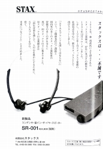

�V.広告
←�E1991〜1995年の広告
�F1996〜2000年の広告 
・1996年
1995年12月13日の午後、突然旧スタックス＝スタックス工業�鰍ﾌ経営陣が、全社員に解雇を通知・創業の停止を宣言したらしい。その後、旧会社製品のサービス・修理の継続を条件に旧スタックスの商標・ロゴ・特許権を無条件継承した�泣Xタックスが1996年1月22日に登記された。
・1997年
新会社となり、超弩級システム（SRM-T2/SR-Ω（オメガ）)やΣ(シグマ）、DAコンバーターなどは姿を消し、残ったのはSR-001とLambda
Novaシリーズだった。
・1998年
新製品SR-007とSRM-007tが登場した。またＳＲ-001は「MK2」となり、その派生モデルSR-003なども発売された。
・1999年
旧会社から継続していたLambda
Novaシリーズの後継機、SR-404Signature/303Classic/202Basicとなり、一部のアクセサリーを除き、製品の入れ替えが終了した。
・2000年